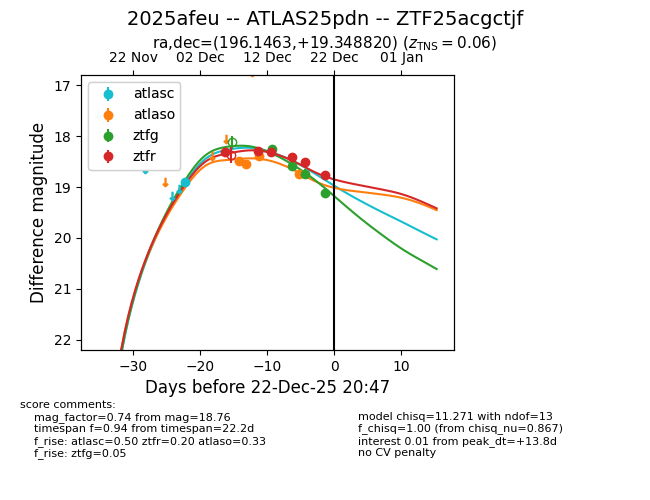
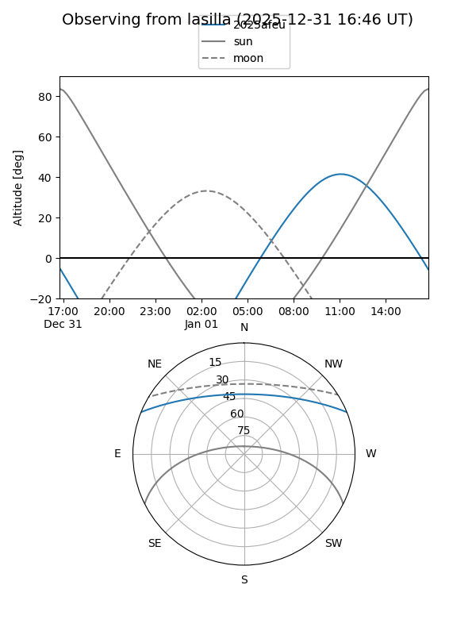
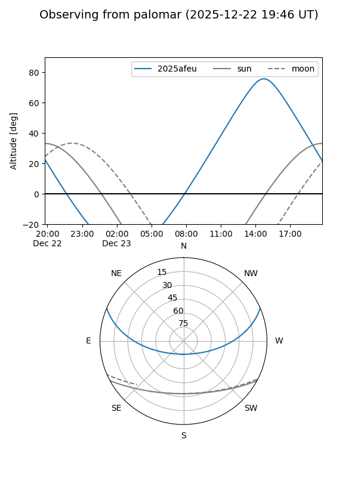
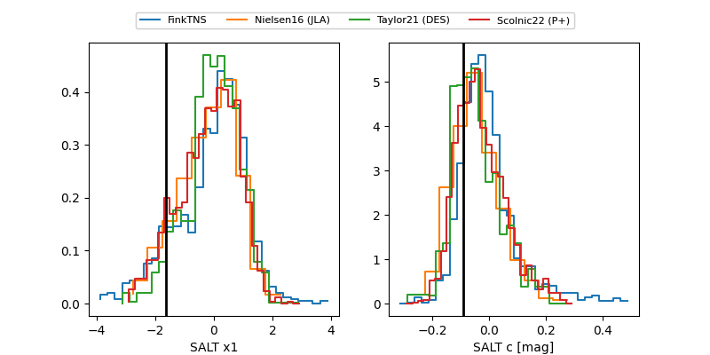

2025afeu
Target 2025afeu at 2025-12-22 15:41
Aliases and brokers:
FINK: fink-portal.org/ZTF25acgctjf
Lasair: lasair-ztf.lsst.ac.uk/objects/ZTF25acgctjf
ALeRCE: alerce.online/object/ZTF25acgctjf
TNS: wis-tns.org/object/2025afeu
YSE: ziggy.ucolick.org/yse/transient_detail/2025afeu
alt names
ZTF25acgctjf (ztf,fink_ztf)
2025afeu (tns,yse)
ATLAS25pdn (atlas)
Coordinates:
equatorial (ra, dec) = 196.1463,+19.34882
equatorial (HMS+DMS) = 13:04:35.10,+19:20:55.75
galactic (l, b) = (324.8193,+81.65623)
Flags:
confirmed ia
Photometry:
last atlasc=18.89, atlaso=18.74, ztfg=19.11, ztfr=18.76
1 atlasc, 4 atlaso, 4 ztfg, 6 ztfr detections
Lightcurve

Visibility


Additional plots
